Engineering
We design through brainstorming, prototyping, stress testing, match drills, data review, and iteration.
FTC Team #22829 - Killarney Secondary School
We are a student FTC team focused on reliable engineering, iterative design, Java programming, CAD, mechanical fabrication, and STEM outreach that reaches from our school community to teams around the world.
Founded as a focused group of four, BotSquared has rapidly expanded into a student team built around peer mentorship, quick skill growth, and a drive to leave a positive impact on the FTC community.
We design through brainstorming, prototyping, stress testing, match drills, data review, and iteration.
Our students are ages 14-15 and learn through hands-on building, leadership, and peer-to-peer mentorship.
We aim to build a reliable, high-scoring robot while championing STEM access locally and internationally.
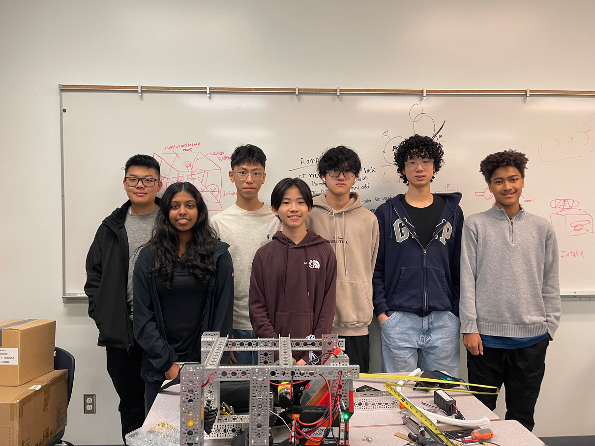
BotSquared started as a focused group of four and grew by recruiting three new members through Killarney Secondary School's Clubs Day. Experienced members pass down technical knowledge, leadership habits, and team values so the program can stay resilient season after season.
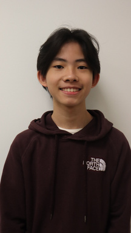
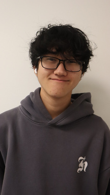
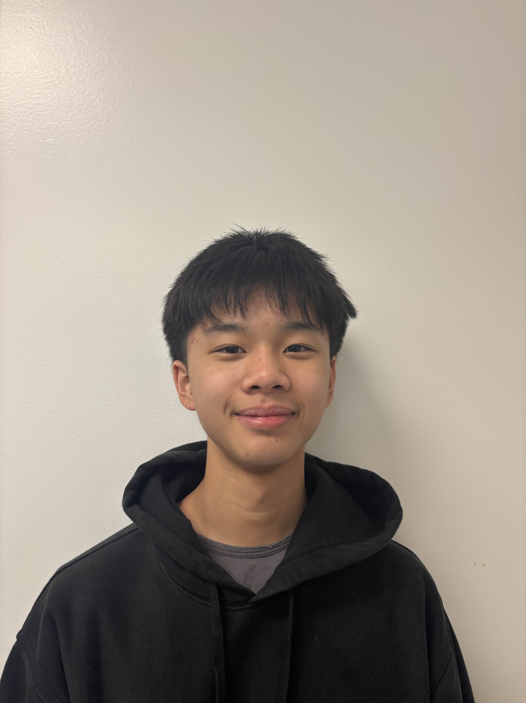
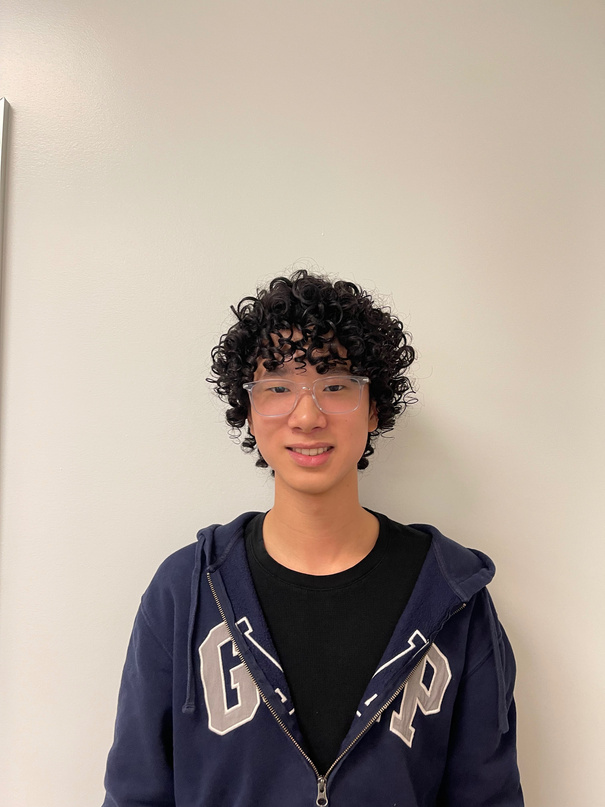
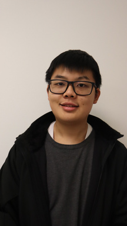
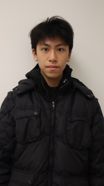
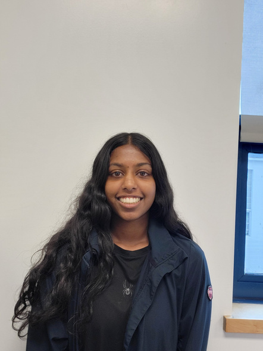
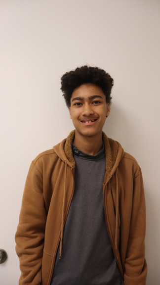
Our current robot is engineered for high-frequency cycling, quick field movement, reliable collection, controlled transfer, and repeatable shooting.
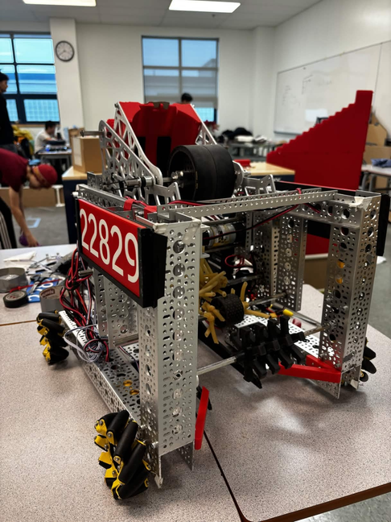
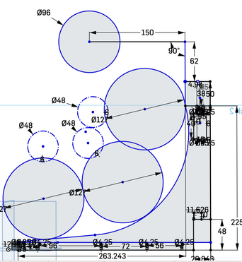
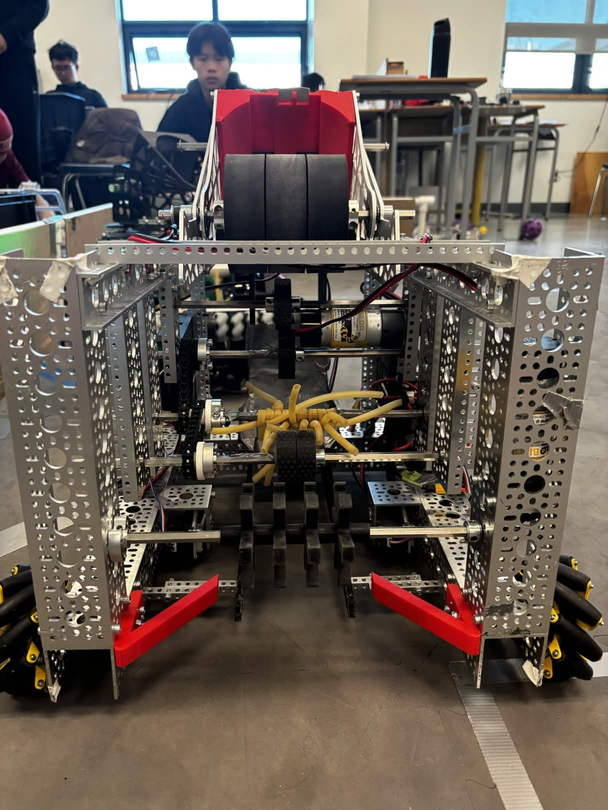
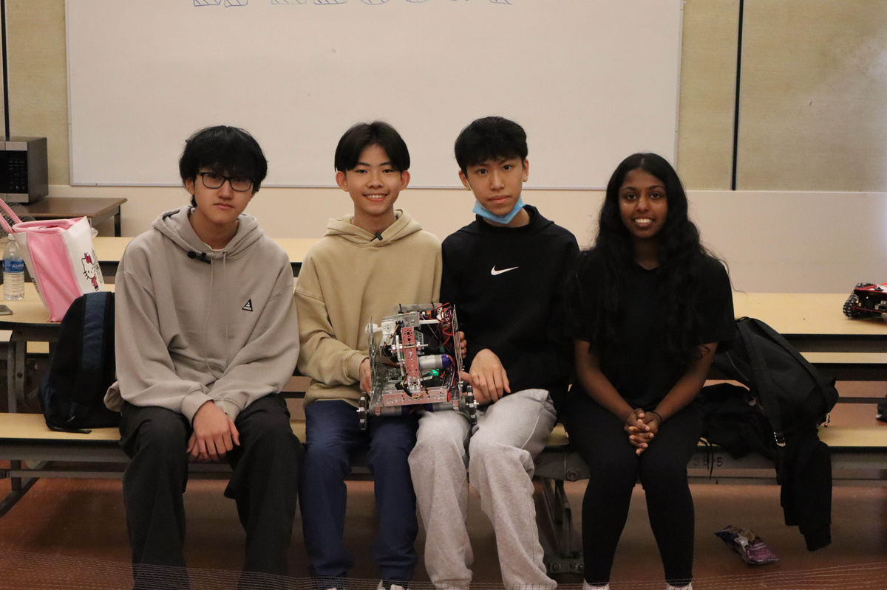
Every prototype is tested for cycle time, consistency, failure points, and driver feedback before iteration.
Dual shooter velocities support both cross-field and close-range scoring without forcing one fixed sweet spot.
Field-centric TeleOp, aim-hold assistance, and grouped intake-transfer controls reduce driver workload.
BotSquared outreach spans school recruiting, national FTC media, international team collaboration, and direct support for other teams.
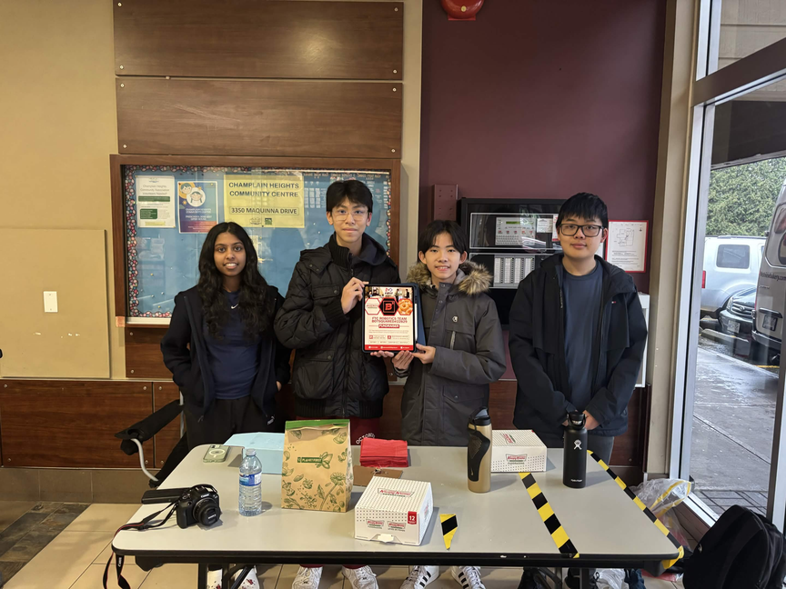
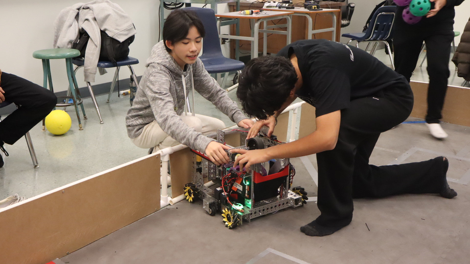
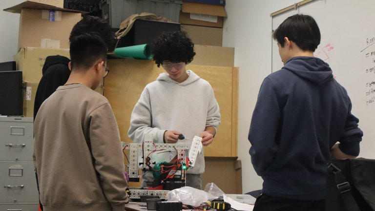
We showcased our competition robot at Killarney Secondary School and recruited three new members.
We run a national FTC platform with 2,900+ followers, 64,000 views, and 20,000 monthly returners across BotSquared and FTC News Canada.
We meet with teams from the USA, Kazakhstan, Romania, Greece, and other regions to exchange design, coding, outreach, and match strategy ideas.
We have supported teams including AArcHive #4890, SlapSeals #28473, NOVATARD #24950, The Merge #33593, Syntax Terrors #34045, FoxSlide #29029, and Broboti #19176.
We joined global community events and hosted an FTC Jersey Challenge with 10+ Canadian teams and 150+ votes from FTC teams around the world.
Funding and mentorship keep our robot moving. Our support comes from Killarney Secondary School, KNOTbot #22817, local partners, and student-led fundraising.
Killarney Secondary School supports us with a $2,500 annual budget, while student-led fundraising covers additional robot parts, tools, and competition fees.
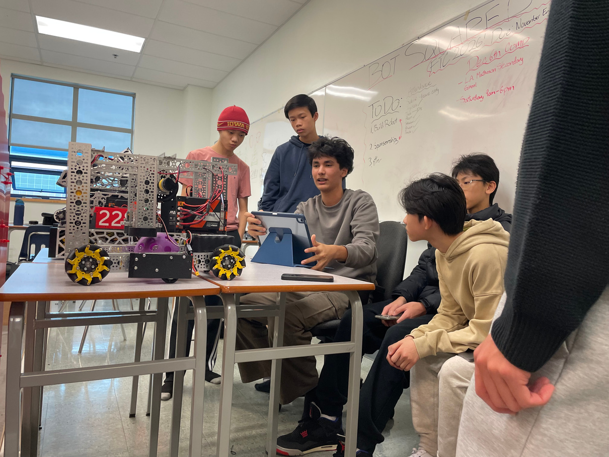
Reach out for team interest, sponsor conversations, media collaboration, outreach events, or FTC knowledge-sharing.
BotSquared is always looking for ways to grow STEM, share what we learn, and connect with teams working through similar engineering challenges.